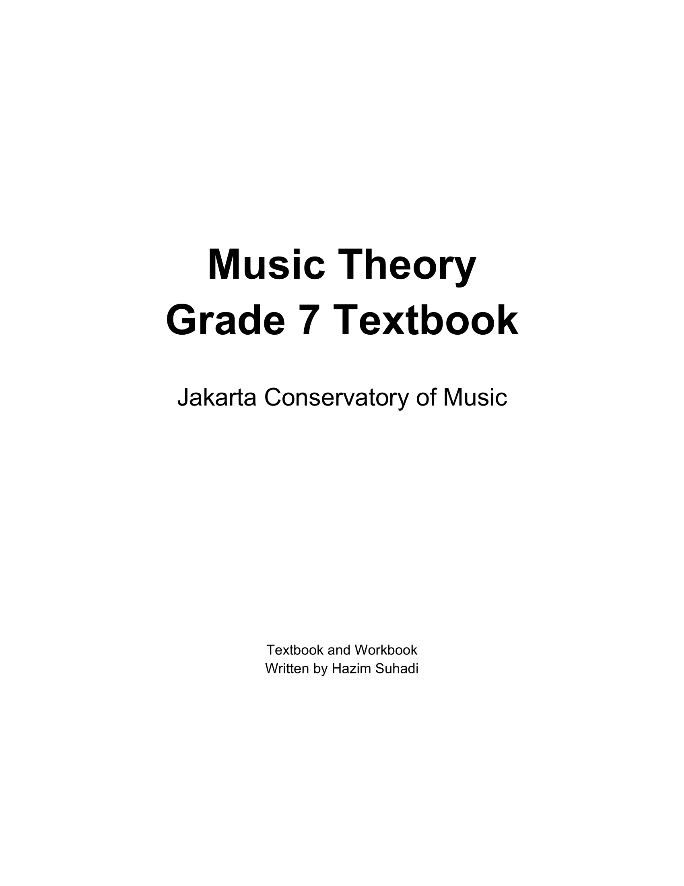

Video Library for Students
Essential materials for your learning journey

Preview of the JCoM Grade 7 Workbook
Your complete semester guide containing exercises, theory explanations, and practice materials. This PDF will be your companion throughout the entire course.
Watch and review our teaching sessions
Today we reviewed the types of motion in music, identified instances of parallel and direct fifths and octaves, and practiced analyzing and constructing simple chords in first inversion.
Today we explored techniques for crafting strong two-voice counterpoint, building on previous lessons by avoiding parallel motion and resolving the leading tone to the tonic. We also examined harmonic progression and practiced both first-level and second-level analysis.
Today we explored how to harmonize a soprano melody effectively by crafting a strong chord progression and shaping a complementary bass line.
We practiced reading figured bass for root and first inversion chords in major and minor keys. We also learned how to use cadential tonic second inversion chords. Pedal and passing second inversions will be covered next class.
We reviewed second inversion chords in greater detail.
We began our study of nonharmonic tones by introducing passing tones.
Our lesson continued with a closer look at neighbor tones.
We continued by examining a broader range of nonharmonic tones, including incomplete neighbor tones (like escape tones and appoggiaturas), anticipation, suspension, and retardation.
We explored how seventh chords are built, with a detailed focus on the dominant seventh chord and its characteristics.
We examined the construction and sound of supertonic seventh chords, as well as how they resolve within harmonic progressions.
We examined the construction and sound of leading-tone seventh chords, as well as how they resolve within harmonic progressions.
We examined the construction and sound of various seventh chords and briefly introduced the concept of secondary dominants and their formation.
We examined the construction of secondary leading-tone chords.
I'll be adding more teaching sessions here. Check back regularly for new content!